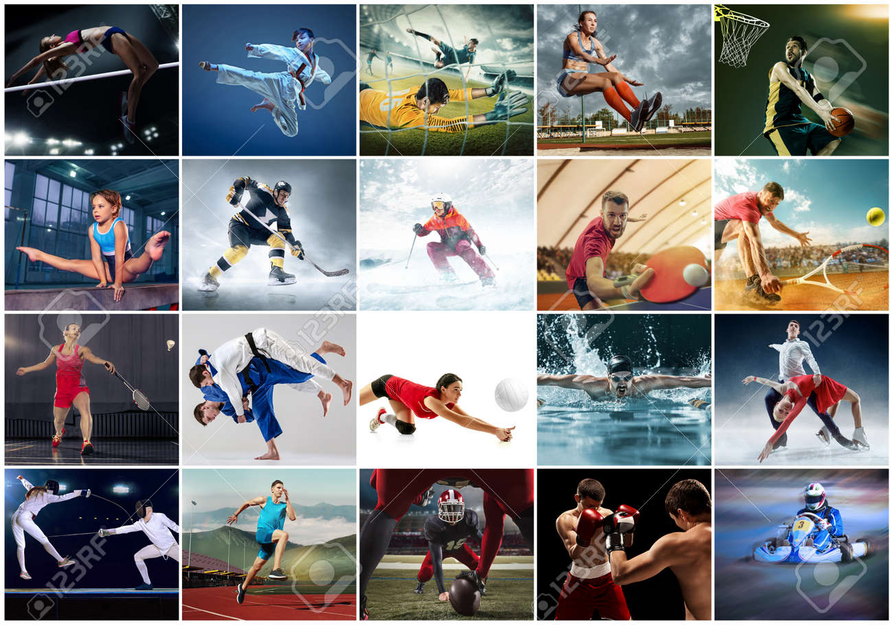

Natación. La natación es uno de los deportes acuáticos más accesibles: todo lo que necesitas es un traje de baño, una masa de agua y quizás unas gafas. ... Kayak. ... Piragüismo. ... Rowing. ... Stand-Up Paddleboarding. ... Rafting. ... Surfing. ... Wakeboarding.
Fútbol. El fútbol, también conocido como soccer en algunos países, es uno de los deportes más populares a nivel mundial. ... Baloncesto. El baloncesto es otro deporte popular que se juega con una pelota. ... Tenis. ... Golf. ... Voleibol. ... Béisbol. ... Fútbol americano. ... Rugby..
Aeromodelismo. Ala delta. Modelismo espacial. Paracaidismo. Paramotor. Parapente. Ultraligeros o ULM (UltraLigeros Motorizadas ) Ultraligeros deportivos.